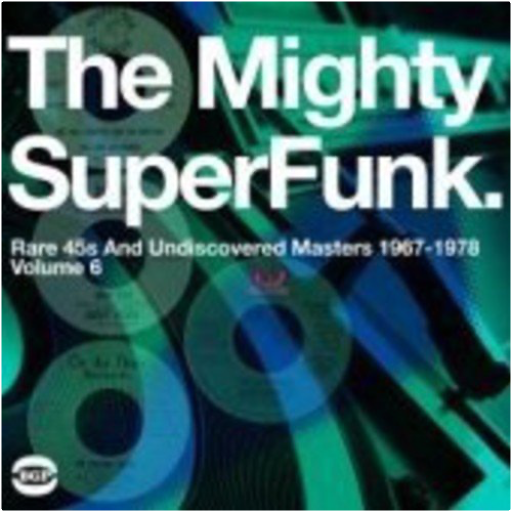

superfunk, volume 6: the mighty superfunk - rare 45s and undiscovered masters 1967-1978bgp  2008 double vinyl LP release. BGP's unique access to record company vaults across the U.S. means that Mighty Super Funk features titles that you simply can't get anywhere else. This time we have breathtaking Latin Funk from Jamo Thomas and also Los Africanos whose take on 'It's Your Thing' is a dead ringer for Ocho's classic 'Hot Pants Road' - mainly because it has the same team of musicians and producers behind it. Also at the peak of Funk discoveries are Eleanor Rigby's 'Queen of Losers' which is a new tune based on the rhythm of Brenda George's 'I Can't Stand It', and 87th Off Broadway's 'Moving Woman', a scorching piece of female-led group Funk. All of these will be essential must haves for funk fans. Beat Goes Public.  super funk's mission impossible: hard to find and unreleased funk mastersbgp super funk's mission impossible: hard to find and unreleased funk mastersbgp Double vinyl LP pressing. 2011 collection, an installment in the best-selling Super Funk series, containing 20 tracks of super-rare funk, 13 of them previously unreleased. Of the seven issued titles, Betty Gouche's is one of the most in-demand records of the moment. Also highly regarded is the Jim Pipkin, James Brown-alike 'Walking the Duck', while the Eternal Flames' record would set you back hundreds of pounds. The other four are in-demand and none could be bought for less than £100. The unissued tracks include an instrumental version of the break-beat classic 'I Got Some', perfect for producers wanting to swipe the beat. There's a strong chunk of Gospel funk from Dorothy Norwood, gems from the Music City and Dave Hamilton vaults and a scorching slice of southern fried sister funk 'Talk Is Cheap' by an unknown Soul singer. BGP. urban disciplinebiohazard Si certains albums sont de ceux qui imposent un style, Urban Discipline en fait assurément partie. 10 ans avant la déferlante rap core, Biohazard s'imposait déjà comme un précurseur en mélangeant hardcore, metal et hip-hop. Copié, plagié mais jamais égalé Urban Discipline est une véritable bombe. À travers les 16 compos, Biohazard impose un style, son style, à grands coups de guitare saturée, de basse groovy à souhait et de chant au phrasé rap. Il suffit d'écouter l'intro de "Hold My Own" ou de "Urban Discipline" pour comprendre qu'on tient entre les mains un chef-d'œuvre qui a influencé beaucoup des groupes actuels. L'ensemble est tellement bon qu'on en viendrait presque à oublier la qualité de la production, qui plus de 10 ans après, a mal vieilli. C'est simple il n'y a rien à jeter. Cet album reste donc un standard du metal moderne et, malheureusement, un chef-d'œuvre trop souvent oublié par la nouvelle génération, à redécouvrir d'urgence !!! —Fabrice Tayot brass constructionbrass construction 180 gram audiophile vinyl / THEIR FIRST ALBUM FROM 1975, INCLUDES THE FUNK HITS 'MOVIN' AND 'CHANGIN' |


 Made with Delicious Library
Made with Delicious LibraryNancy, State zipflap congrotus delicious library Thomas, Julien